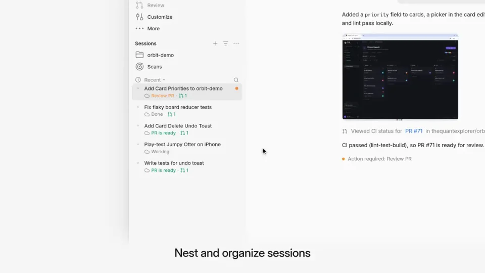
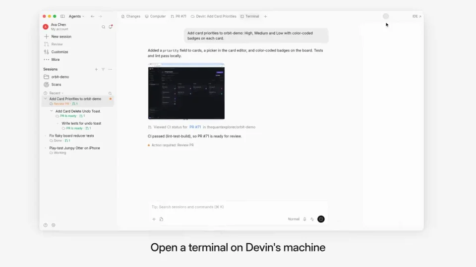
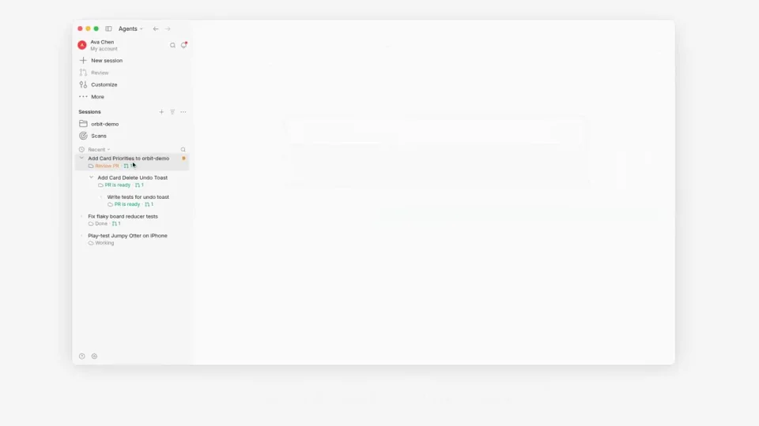
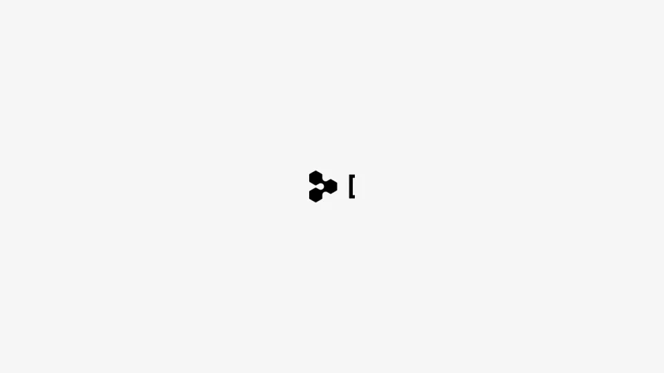

Cognition / V150
Devin Desktop 改版
每段先显示完整窗口，再推近当前区域：会话树、终端、设备测试、规则设置与 PR。字幕固定在画面下方说明这一段的操作。
构图与编排 可播放 · 可替换内容
整体编排规则示例
查看 HTML 源码
<!doctype html><html lang="zh-CN"><meta charset="utf-8"><meta name="viewport" content="width=device-width,initial-scale=1"><title>Devin Desktop 改版 · sequence</title><style>html,body{margin:0;width:100%;height:100%;overflow:hidden;background:#fafafa}canvas{display:block;width:100%;height:100%;object-fit:contain}</style><body data-mode="sequence"><canvas width="1000" height="600"></canvas><script src="data.js"></script><script src="common.js"></script><script src="scene.js"></script><script src="bridge.js"></script></body></html>画面元素会话树终端设备画面规则编辑PR diff功能字幕
MOTION LANGUAGE
动作与构图
局部动作 · 构图规则
01
围绕功能把界面拉近再拉远
每段先显示完整窗口，再推近当前区域：会话树、终端、设备测试、规则设置与 PR。字幕固定在画面下方说明这一段的操作。
02
状态变化必须发生在当前焦点
状态变化必须发生在当前焦点规则示例
查看 HTML 源码
<!doctype html><html lang="zh-CN"><meta charset="utf-8"><meta name="viewport" content="width=device-width,initial-scale=1"><title>Devin Desktop 改版 · sequence</title><style>html,body{margin:0;width:100%;height:100%;overflow:hidden;background:#fafafa}canvas{display:block;width:100%;height:100%;object-fit:contain}</style><body data-mode="clip" data-start="23" data-end="28"><canvas width="1000" height="600"></canvas><script src="data.js"></script><script src="common.js"></script><script src="scene.js"></script><script src="bridge.js"></script></body></html>拖动会话后看层级变化，运行命令后看终端文本，点击合并后看成功反馈。其他区域降低对比，操作与结果不要分散到不同窗口。
03
界面保持实用而克制
白面板与浅灰分隔承担主要层级，浅绿只用于成功行或状态。换工具时替换具体面板与操作，仍保留每段一个动作与一个结果。
SEQUENCE
段落与节奏
点击段落，定位到上方编排示意。




画面参考 · 离散静帧
KEEP THE RELATIONSHIPS
制作其他主题
- 替换开发工具流程，保持功能字幕、界面焦点和结果一致。
制作约束
会话树 / 终端 / 设备画面 / 规则编辑 / PR diff / 功能字幕
- 每段先显示完整窗口，再推近当前区域：会话树、终端、设备测试、规则设置与 PR。字幕固定在画面下方说明这一段的操作。
- 拖动会话后看层级变化，运行命令后看终端文本，点击合并后看成功反馈。其他区域降低对比，操作与结果不要分散到不同窗口。
- 白面板与浅灰分隔承担主要层级，浅绿只用于成功行或状态。换工具时替换具体面板与操作，仍保留每段一个动作与一个结果。